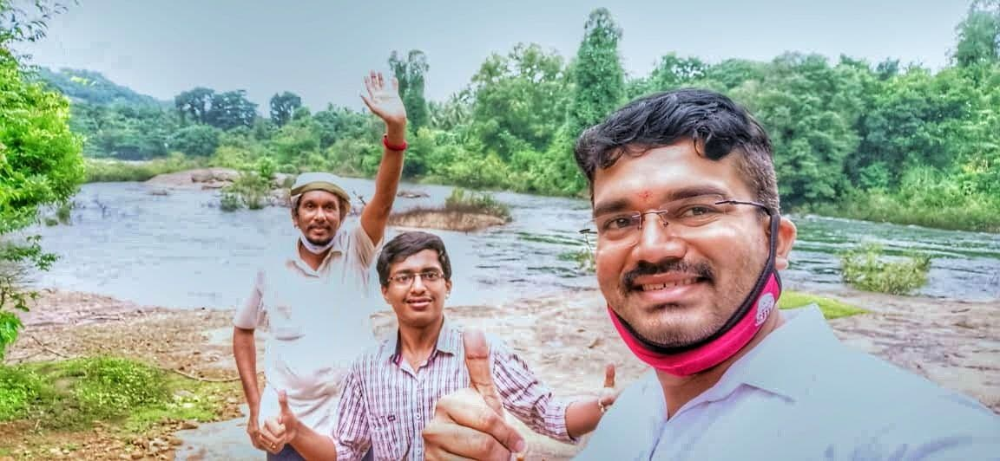
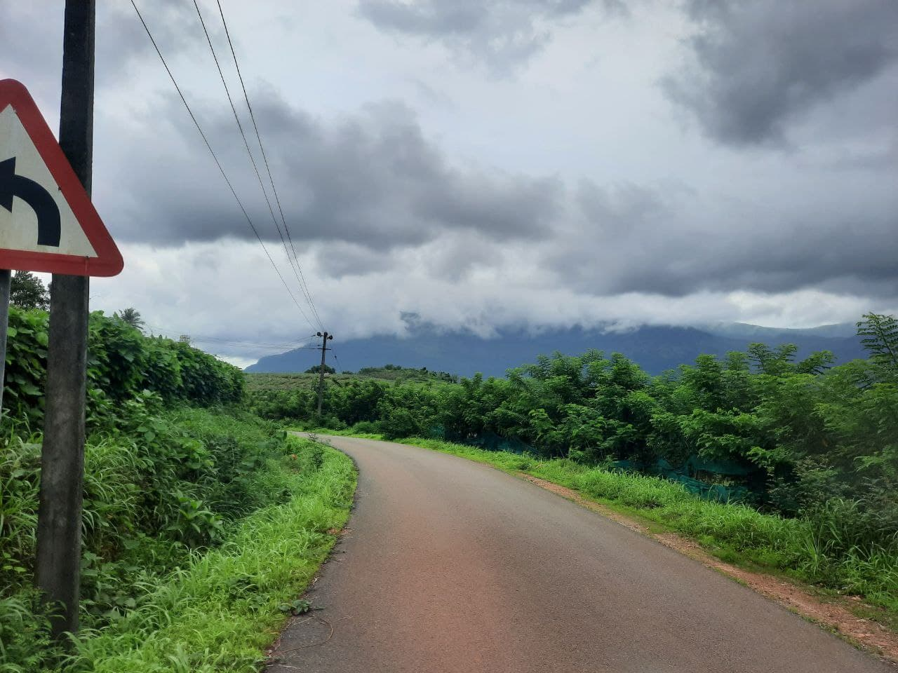
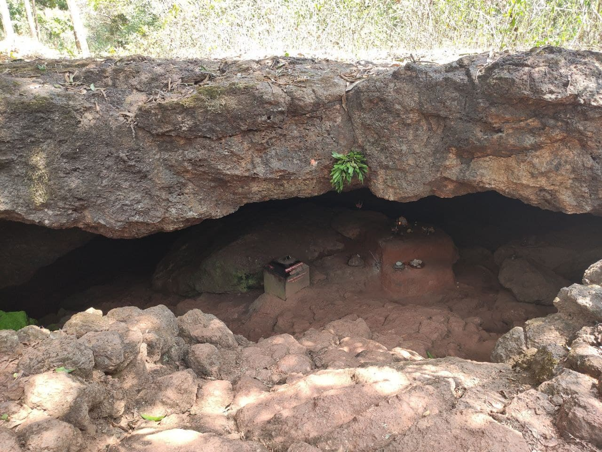
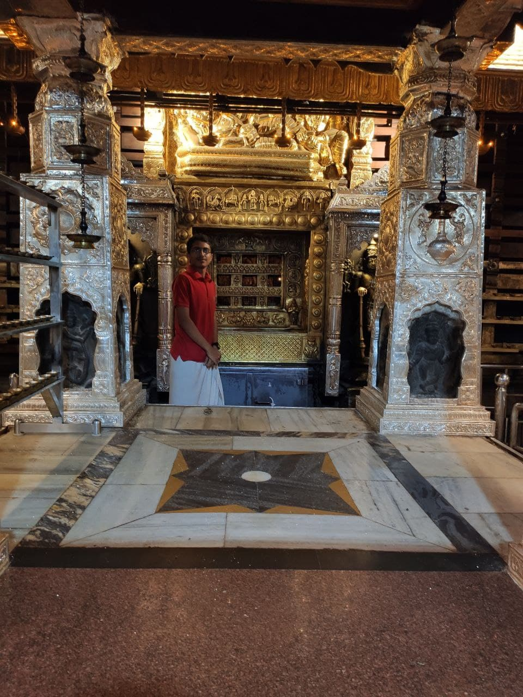
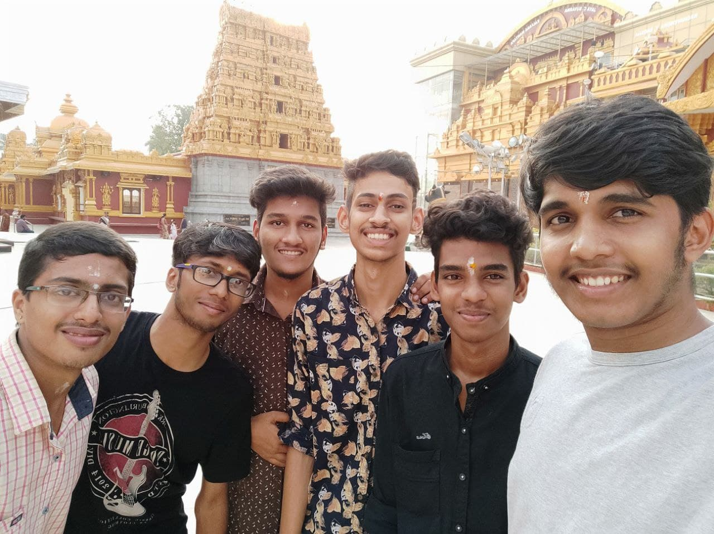
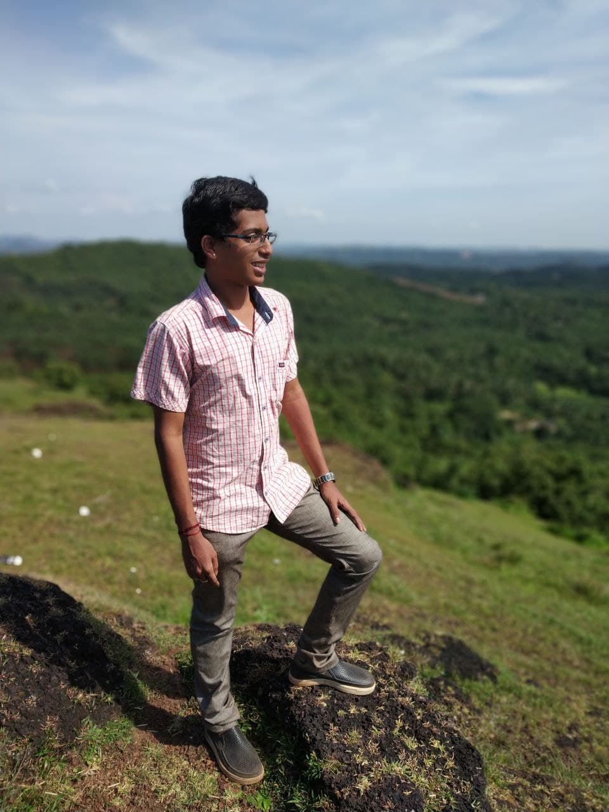
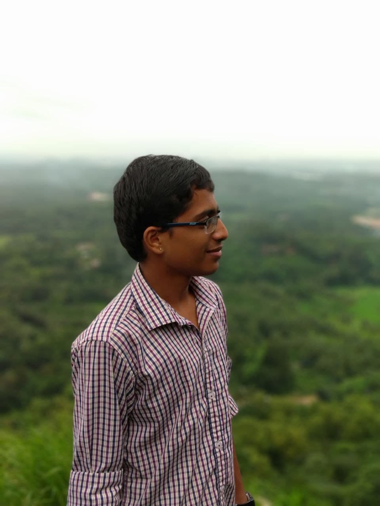

Ecological sustenance and the Inclusive nature of spiritual process are inseperable
23rd Jul 2020 - Kollur

Photo captured while returning from Kollur Temple. The river behind is Souparnika Nadi.

Great scenary while going to Sri Mookambika Temple, Kollur
8th March 2020 - Suparsha Cave, Kamalashile

In Krutha Yuga, King Suparsha searched a new place in order to perform the penance and get Moksha from his sins. He came towards this cave and found the cave suitable for his meditation. This is the reason why the cave got the name ‘Suparsha Cave’; named after the king.
18th Jan 2020 - Shri Krishna Matha, Udupi

We visited Shri Krishna Mutt on the day of paryaya. Ishapriya Tirtha Swami, junior seer of Admar Mutt ascended the paryaya peetha.
10th Jan 2020 - Kudroli Gokarnanatheshwara Temple, Mangalore

This temple was consecrated by Narayana Guru. Gokarnanatha is a form of Shiva.
29th July 2019 - Mala, Karkala
It was amazing to see newly constructed canal and dam in Mala
Some where between the forest of Mala
15th July 2019 - Sringeri
According to legend, Sri Adi Shankara is said to have selected the site as the place to stay and teach his disciples, because when he was walking by the Tunga river, he saw a cobra with a raised hood, providing shelter from the hot sun, to a frog undergoing labour. Impressed with the place where natural enemies had gone beyond their instincts, he stayed here for twelve years. Sri Adi Shankaracharya also established mathas in the northern (at Jyotirmath, near Badrinath), eastern (at Puri) and western (at Dwaraka) quarters of India.
The Sringeri Sharada Peetha, also called Dakshinamnaya Sringeri Sharada peetam, is one of the four Hindu Advaita maths established by Sri Adi Shankara.
Agumbe Ghat one of the ghat of western ghats. It was great experience to capture the falls, hills and sunset.
Kabbinale falls: Literal meaning of Kabbinale is Crushing unit of sugarcane. This falls just looks like sugarcane juice with white foamPhoto take on an old bridge on the way to Kabbinale
Photo take on an old bridge on the way to KabbinaleVaranga Jain Basadi: >A basadi is located in the middle of a loke filled with lotus. The only way to go to the temple is a small wooden boat.
26th & 27th June 2019 - Kumaraparvatha, Kukke
This is also called as Pushpagiri peak. This is of 1712 meters and is the highest peak in Pushpagiri wildlife sanctury in the Western Ghats.
It is the fourth highestpeak of Karnataka.
It is believed that Lord Subramanya's footmark is presented in the hilltop temple. You can see the stone mark still. Top of the hill there are two temples, one is for Lord Shiva and other one for Lord Shubramanya. It is believed that if any person has Sharpadosha it can be eliminated by visiting this temple.
This is Bhatra mane on the half way of the hill. Trekkers rest, have food and sleep at nights in his house.
We preparing Maggiee in Bhatra Mane in night after a long treak
15th Sept 2018 - Canara Point, Bantwal

This is the hill near our college located in Benjanapadavu
13th Aug 2018 - Narahari Hills

We had a visit to Narahari hills from our college as an Introduction program to do Swatch Bharat mission
.jpg)
.jpg)
.jpg)
.jpg)
.jpg)
.jpg)
.jpg)
.jpg)
.jpg)
.jpg)
.jpg)
.jpg)
.jpg)
.jpg)
.jpg)